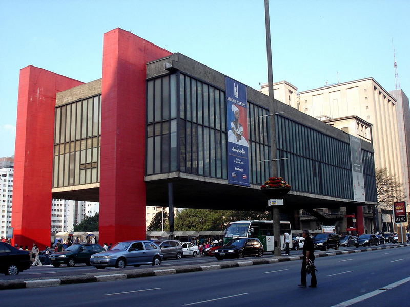
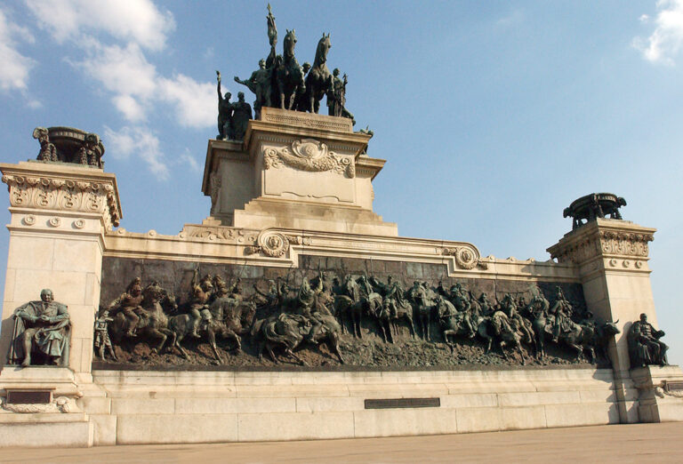
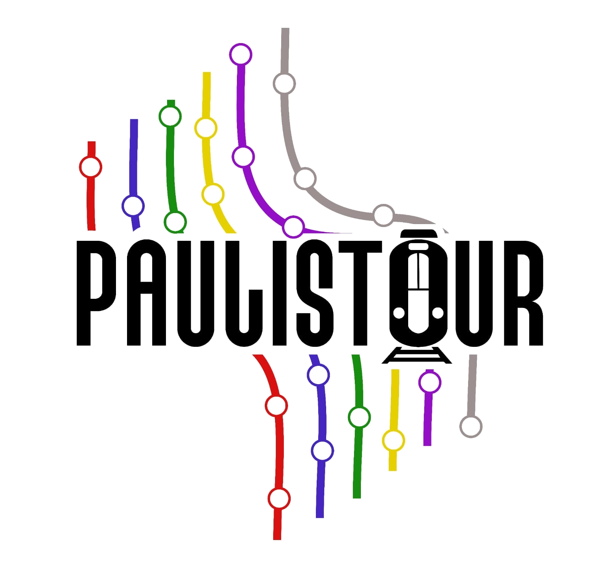
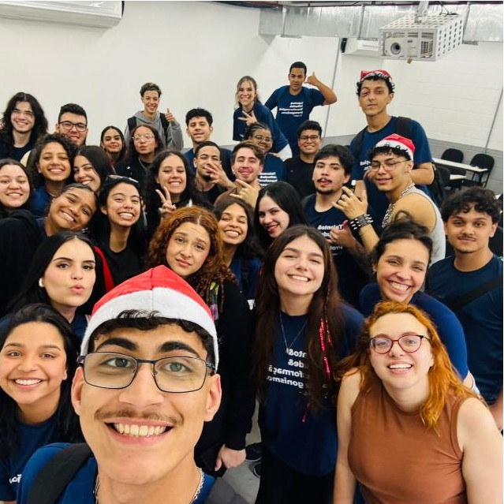

Conhecendo SP





PAULIS TOURDemocratizando o acesso à cultura e ao lazer para a juventude paulistana.
Conheça o ProjetoA PAULISTOUR é uma iniciativa criada por jovens aprendizes da ESPRO com o objetivo de democratizar o acesso ao turismo e à cultura em São Paulo.
Por meio de experiências acessíveis e sustentáveis, o projeto aproxima jovens moradores da cidade, valorizando sua diversidade cultural, histórica e social.



Conecte-se com a Paulistour